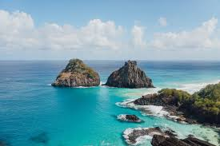

Fernando de Noronha, Pernambuco
A encantadora ilha de Noronha conta com paisagens indescritíveis e com uma bela fauna e flora. Encontre um refugio da sua alma no paraíso perdido.

Maragogi, Alagoas
Maragogi é conhecida como o Caribe Brasileiro, com suas águas cristalinas e piscinas naturais. É um destino perfeito para quem busca tranquilidade e belezas naturais.

Lençóis Maranhenses, Maranhão
Os Lençóis Maranhenses são um fenômeno natural único, com suas dunas de areia branca e lagoas de água doce. É um destino imperdível para os amantes da natureza e da aventura.